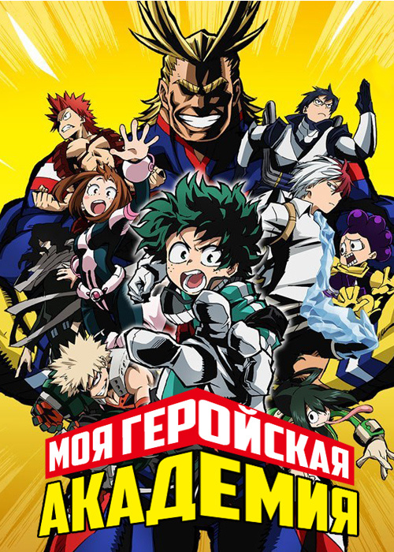

Действие происходит в мире, где большинство людей рождается с необычной способностью, которая называется «причуда». Однако главный герой, Идзуку Мидория, родился без причуды. Мечтая когда-нибудь стать героем, он упорно пытается достичь небывалой силы и приблизиться к своей мечте. После встречи со своим кумиром Всемогущим он получает собственные суперсилы и решает поступить в академию «Юэй» (UA). Несмотря на практически провальное вступительное испытание, Идзуку таки поступает в желанное учебное заведение.
